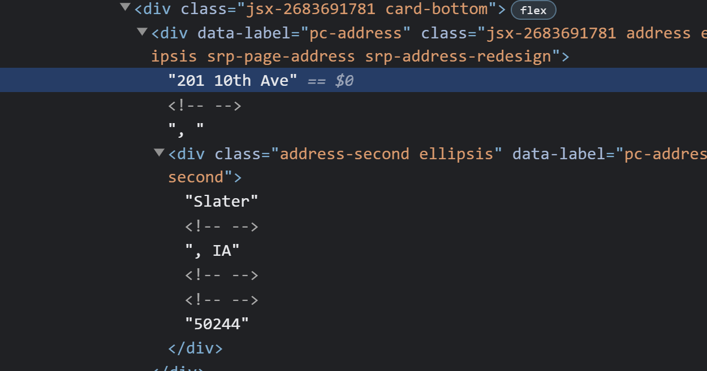

Week Five of DSPG
Monday
Chris informed us this morning that we need to include a demographic analysis or report in our project. We reviewed the initial project brief, and I realized that my group had skipped to the end of Year 1 when we started with AI Models. Whoops!
We need to go back at some point and work with demographics. I started a little bit of it today. We need to include the following:
Identify communities with populations between 500 and 10,000
Change in population
Presence of schools
Mean age of residents (I wonder if we should discuss changing this to median because it is less influenced by outliers)
Industry report
Ag Census data:
Number of Operators
Operator Owned
etc.
Housing appreciation and depreciation vs. inflation
We also started sorting the Google Street View images to train our AI Models on Monday. We need to sort based on six different models. We started with our first three.
- Is a house present?
- Yes
- No
- Is it a clear image of a house?
- Obstructed
- Partially obstructed
- Not obstructed
- Are there multiple houses?
- One House
- More than one house
When we started sorting the images, I noticed an error with an Independence image. The image on the left below is the one that we downloaded from Google Street View. Because I have been in Independence before, I could tell that this was not a photo of Independence. The photo on the left is from a different place, and the photo on the right is the same address but actually in Independence.
I checked the URL we used to generate the Google Street View image on the left, and I noticed that we did not specify the city and state. In fact, we didn’t specify the city and state for any of the Independence URLs or the New Hampton URLs. Thankfully this was a quick fix. We just added the city and state to the URL files, and the images downloaded quickly.

While I was waiting for images to download on Monday, I started working on scraping Realtor.com. NOTE: it is Realtor.com not Realtors.com. I definitely have been misspelling it. From the brief look I took at web scraping Realtor.com, it looks like it might be slightly more complicated than Zillow.
The address data is stored differently on Realtor.com, and I was not successful in scraping it. Instead of being on one line of HTML, it is split up on multiple.
